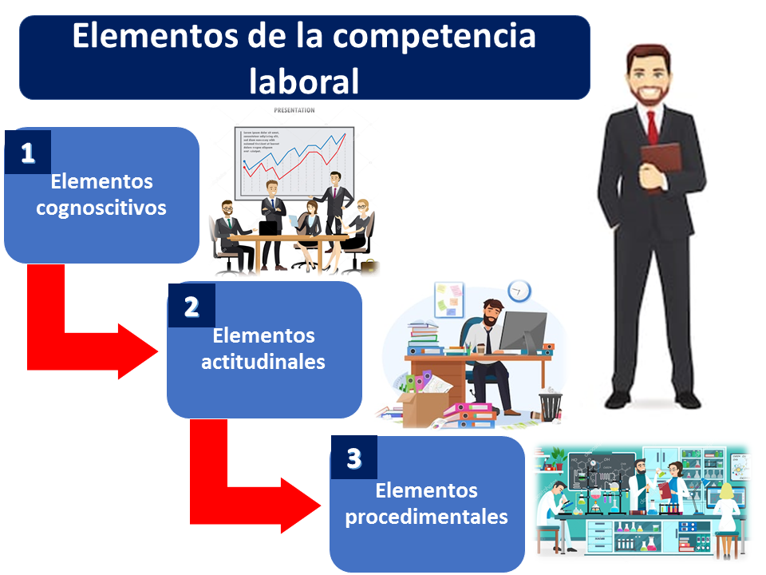
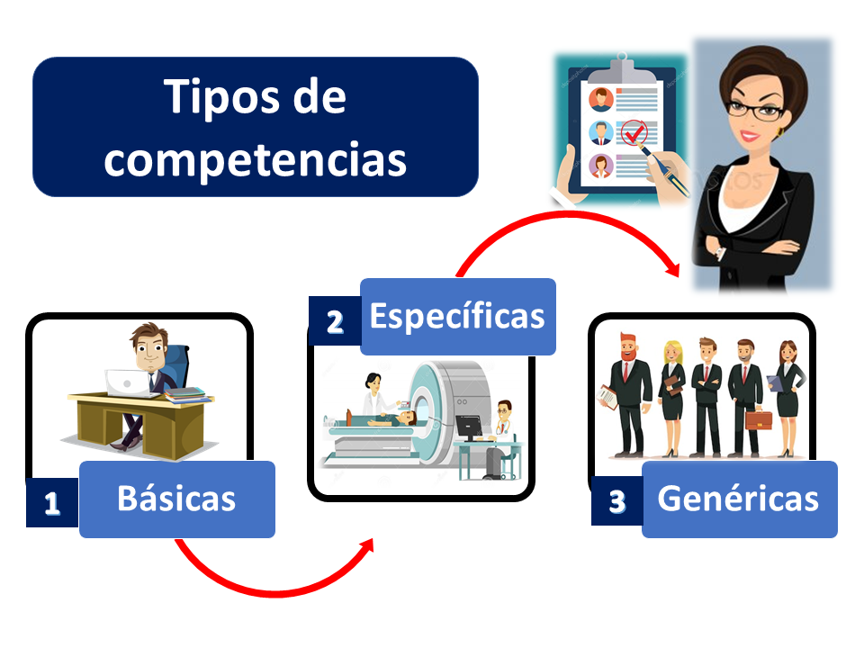

Es indispensable para alcanzar el éxito a largo plazo; además, incorporar las distintas herramientas de gestión de talento humano, brinda múltiples beneficios tanto para los empleados como para la compañía y te impulsa a posicionarte en un nivel competitivo con empleados calificados.
Estos métodos te permitirán obtener un aumento de la productividad de tus colaboradores, aumento de la satisfacción de tus clientes, mayor rendimiento en las ventas, menos rotación de personal y por supuesto, una ventaja competitiva ante el resto de las empresas.
Cinco formas de incentivar el desarrollo de competencias laborales
1. Plan de aprendizaje y desarrollo:
Un programa efectivo de capacitación para tus colaboradores que les brinde educación y preparación, pero a la vez les permita tener un control de su propio aprendizaje, maximiza los niveles de eficacia y aumenta el rendimiento.
Los programas de formación en línea con modalidad e-learning son una opción cada vez más atractiva, ya que les permite a los empleados aprender a su propio ritmo sin disponer de un horario y con acceso al material de estudios de forma inmediata.
2. Coaching:
El coaching es un método muy efectivo, sobre todo cuando se trabaja con base en plazos y metas. Los beneficios de este enfoque incluyen la mejora de la comunicación y habilidades para resolver problemas, el aumento de la calidad y cantidad del trabajo y la transferencia del aprendizaje.
En este método, la persona se beneficia de contar con el apoyo de un compañero o líder que tiene la experiencia necesaria y lo puede ayudar a fortalecer las competencias funcionales requeridas para desempeñar más efectivamente el puesto de trabajo.
3. Equipos multidisciplinarios:
La puesta en marcha de proyectos por parte de equipos multidisciplinarios y no de forma individual, aumenta la responsabilidad, el interés, la motivación y el sentido de pertinencia del empleado, quien además será capaz de probar nuevas habilidades, establecer relaciones y explorar nuevas áreas de especialización.
Al llevar a cabo esta práctica se fomenta el aprendizaje colaborativo y la participación de los colaboradores con distintas competencias que pueden enriquecerse entre sí. Cuando detectas que una persona de tu equipo tiene la necesidad de adquirir o reforzar alguna habilidad en particular puede ser de gran apoyo que comparta con colegas que por su área de trabajo tienen más desarrollada dicha competencia; de alguna manera es aprender por medio de la observación.
4. Rotación de puestos de trabajo:
La rotación de puestos de trabajo, así como el entrenamiento cruzado, se basa en el aprendizaje de nuevas habilidades desde una posición diferente, lo que te permite detectar qué áreas de oportunidad tiene cada persona y qué habilidades requiere desarrollar para avanzar a puestos de mayor responsabilidad.
Esto puede realizarse durante varias horas, meses o incluso años y es muy funcional para aumentar el interés de los empleados por determinadas áreas, prepararlos para un ascenso o mejorar la comunicación.
5. Cambios laterales:
Este método consiste en mover a un colaborador a una posición diferente pero con status, remuneración y responsabilidades similares; lo que aumenta la flexibilidad y la comunicación entre las unidades de trabajo y es ideal para pequeñas y medianas empresas.
Las ventajas que ofrece, tanto para la empresa como para el empleado, se deben a los nuevos retos y al desarrollo de nuevas habilidades sin la necesidad de proporcionarles mayores responsabilidades.

Elementos de la competencia laboral
Los principales elementos que deben formar una competencia laboral son los siguientes:
1. Elementos cognoscitivos:
Por un lado, el elemento cognoscitivo es el saber hacer algo. De este modo, representa el nivel de conocimiento aprendido que es útil y significativo para que el trabajador se pueda desempeñar de forma productiva en una situación de trabajo real.
2. Elementos actitudinales:
Por otra parte, no basta saber hacer algo, el elemento actitudinal hace relación a querer hacer algo; por eso se refiere a las actitudes que todo trabajador debe poseer y poder aplicar en el momento adecuado y preciso, estas actitudes están relacionadas con la consecución del éxito en un puesto específico.
También, las actitudes definen la forma de como una persona se comporta y actúa al momento de desempeñar sus tareas dentro de su trabajo
3. Elementos procedimentales:
Claro que, el elemento procedimental incluye todas las destrezas que se deben tener para realizar una labor. Son todas las habilidades adquiridas para manejar procedimientos y técnicas específicas que son requeridas para que una persona se desarrolle dentro de una determinada área laboral.
Tipos de competencias
Las competencias que debe poseer un trabajador son las siguientes:
1. Competencias básicas:
En realidad, las competencias básicas son los procesos elementales que cualquier trabajador debería manejar para poder desarrollar cualquier tarea o labor, son la base para edificar los demás tipos de competencia.
2. Competencias específicas:
En efecto, las competencias específicas se relacionan con una ocupación concreta y específica. Generalmente no son fáciles de transferirse o trasladarse de una ocupación a otra, porque son muy especializadas.
3. Competencias genéricas:
Por último, las competencias genéricas se caracterizan porque son comunes a cualquier tipo de ocupación, por lo tanto, es fácil poderlas trasladar de una ocupación a otra.

En conclusión, podemos afirmar que es importante para cualquier persona que ofrece sus servicios en el mercado laboral, que adquiera el mayor de número de competencias laborales porque esto les amplía sus oportunidades de contratación, les permite desempeñarse mejor dentro del trabajo que realizan y les genera una mejor retribución salarial. Por su parte las empresas también se benefician porque se vuelven más productivas, más eficientes y por supuesto su margen de rentabilidad es mayor al ser competitivamente superiores.